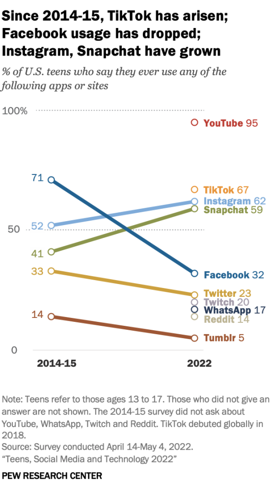
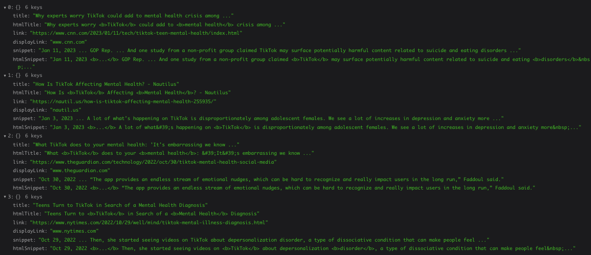
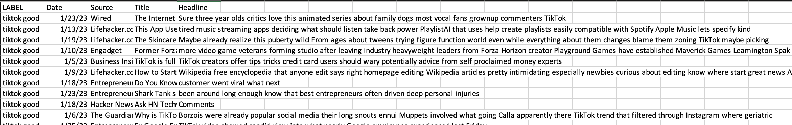
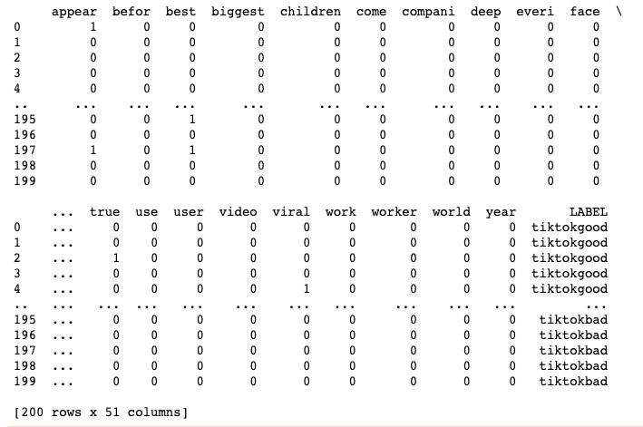
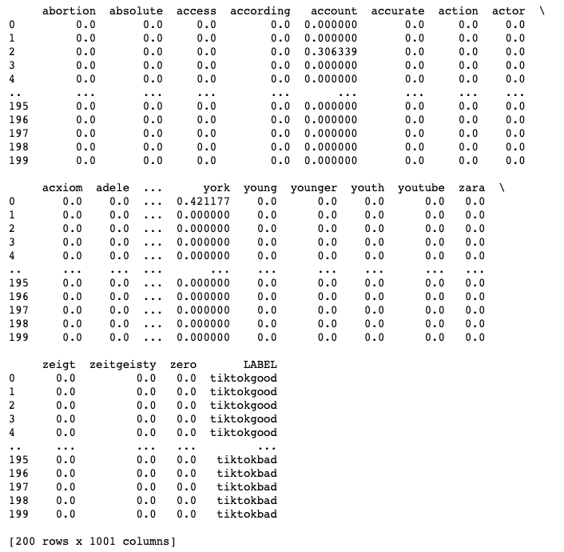

The landscape of social media is ever-changing, especially among teens who often are on the leading edge of this space. A new Pwe Research Center survey of American teenagers ages 13 to 17 finds TikTok has rocketed in popularity since its North American debut several years ago and now is a top social media platform for teens among the platforms covered in this survey.
YouTube tops the 2022 teen online landscape among the platforms covered in the Center’s new survey, as it is used by 95% of teens. TikTok is next on the list of platforms that were asked about in this survey (67%), followed by Instagram and Snapchat, which are both used by about six-in-ten teens. After those platforms come Facebook with 32% and smaller shares who use Twitter, Twitch, WhatsApp, Reddit and Tumblr.
Those common used social medias have a common trend in recent year is the short videos, or in other words, 'Shorts'. A large body of research has shown that short videos are addictive because the app gets to know your preferences, so it delivers videos that match your taste. On the other hand, the shorts can decrease attention span from overabundance of information through just scrolling. In biology field, shorts can cause dopamine problem through gain lots of joy in certain period of time.
Thus, we want to do some analysis on short videos, especially for teenager mental health. The main motivation of this project to figure out how people consider the pros and cons of short videos in these social media and do text mining to get insight from these comments, reviews, and articles. And try to answer this question: Should we pay attention to the short videos in these social media and make restriction on the usage?
Currently Two APIs have been used to gather data, one is newsapi, another is Google Search API. Four labels: tiktokgood, tiktokbad, tiktokmentalhealth, tiktokjoy. Here is the image of raw data:
 The PorterStemmer has been used for Stemming and WordNet from NLTK for Lemmatization. Configured CountVectorizer with maximum feature 50 and TfidVectorizor with maximum feature 1000 to clean the data. Here is the image of cleaned data:
 here is the cluster section
here is the ARM section
here is the LDA section
here is the Naive Bayes section
here is the Decision Tree section
here is the SVM section